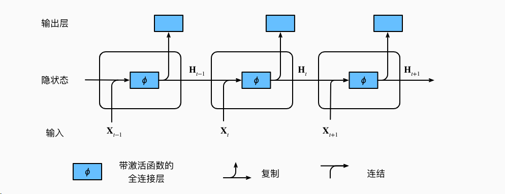
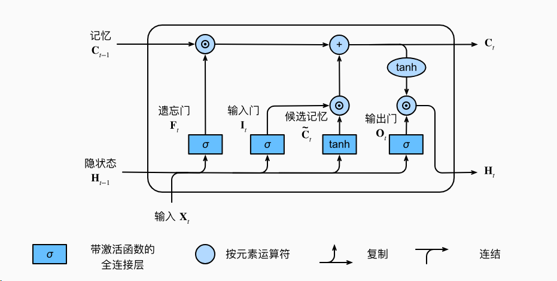
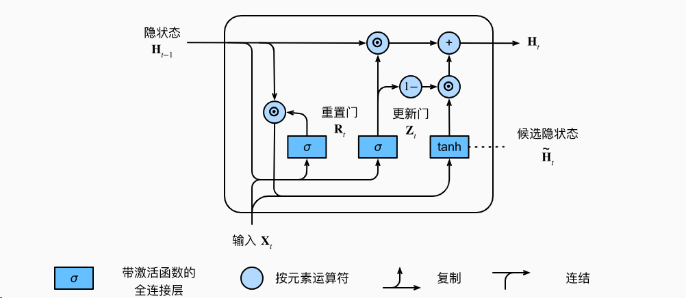

1 简介
循环神经网络被广泛运用于自然语言处理，但是他们都各有各的优缺点。
2 rnn
循环神经网络，鼻祖。
RNN是最基本的循环神经网络形式，它通过将当前的输入与上一个时间步的隐藏状态相结合，来产生输出和更新隐藏状态。然而，传统的RNN存在梯度消失和梯度爆炸等问题，导致长期依赖关系难以捕捉。
产生梯度消失和爆炸主要是由于序列共用隐藏层，反向传播导致出现连乘，且激活函数在偏离原点时取值较小，容易出现梯度消失。

image-20231206101425573
贴一个实现的代码：
1 2 3 4 5 6 7 8 9 10 11 12 13 14 15 16 def rnn (inputs,state,params ):for X in inputs:print (Y.shape)return torch.cat(outputs,dim=0 ),(H,)
对上面情形的描述，相当于时前向传播函数。
3 lstm
lstm和gru的提出用来解决梯度消失和梯度爆炸，而且还创新性的引入了“选择门”，对过去的消息和现在的消息进行选择性遗忘或记住。

image-20231206102217785
其中sigmoid函数出来的用来进行选择，和过去的组合形成遗忘门，和现在的知识组合形成候选记忆门，然后候选记忆和遗忘门相加后输出。隐状态需要输出和一个选择门相乘来更新。
这里的相乘都是对位相乘。
1 2 3 4 5 6 7 8 9 10 11 12 13 14 15 def lstm (inputs, state, params ):for X in inputs:return torch.cat(outputs, dim=0 ), (H, C)
4 gru
gru和lstm结构上很像，都是由选择门和其他门组成，但是gru门更少，参数更少。

image-20231206102514957
1 2 3 4 5 6 7 8 9 10 11 12 def gru (inputs, state, params ):for X in inputs:1 - Z) * H_tildareturn torch.cat(outputs, dim=0 ), (H,)
最大的区别就是输出变成了一个，直接输出结果，结果就是隐状态，不再记忆隐状态，而是变成了一个候选隐状态。具体来说，输出由过去的记忆变为了隐状态。主要的结构是一个重置门和一个更新门。重置门由当前的x和过去隐状态经过sigmoid后组成选择门，也即重置门，之所以叫重置门，是因为它作用的对象是上一个隐状态。再和上一个隐状态相乘后再经过和当前X相乘，再tanh激活函数称为候选隐状态。更新门和重置门的结构类似，也是用来选择的，但是此次作用的对象是过去的隐状态和当前的候选状态，并且两者的比例是由更新门决定的。最后Y就是由H经过全连接层输出。
本质上是lstm的门进行了调整，选择门的结构是一样的，都是由过去和当前进行sigmoid激活进行选择。重置门的作用也比较丰富，同时选择了过去和当前。更新门调整选择的比例，最后输出。